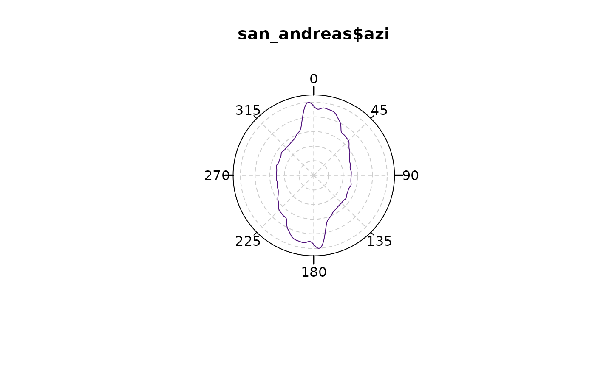
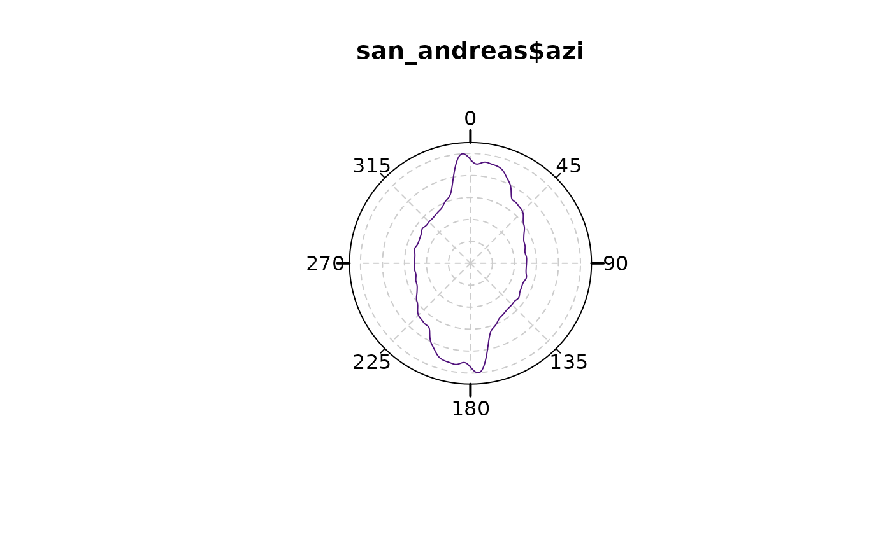

Plot the multiples of a von Mises density distribution
Usage
plot_density(
x,
kappa = NULL,
axial = TRUE,
n = 512L,
norm.density = TRUE,
...,
scale = 0,
shrink = 1,
add = TRUE,
main = NULL,
labels = TRUE,
at = seq(0, 360 - 45, 45),
cborder = TRUE,
grid = FALSE
)Arguments
- x
numeric. Data to be plotted, i.e. vector containing angles (in degrees).
- kappa
numeric. Concentration parameter for the von Mises distribution. Small kappa gives smooth density lines. Will be estimated using
est.kappa()if not provided.- axial
Logical. Whether data are uniaxial (
axial=FALSE) or biaxial (TRUE, the default).- n
integer. the number of equally spaced points at which the density is to be estimated.
- norm.density
logical. Normalize the density?
- ...
Further graphical parameters may also be supplied as arguments.
- scale
numeric. radius of plotted circle. Default is
1.1.- shrink
numeric. parameter that controls the size of the plotted function. Default is 1.
- add
logical. Add to existing plot? (
TRUEby default).- main
Character string specifying the title of the plot.
- labels
Either a logical value indicating whether to plot labels next to the tick marks, or a vector of labels for the tick marks.
- at
Optional vector of angles at which tick marks should be plotted. Set
at=numeric(0)to suppress tick marks.- cborder
logical. Border of rose plot.
- grid
logical. Whether a grid should be added.
See also
Other rose-plot:
plot_points(),
rose(),
rose_geom,
rose_stats()
Examples
# Plot density inside plot only:
rose(san_andreas$azi, grid = TRUE)
plot_density(san_andreas$azi,
kappa = 100, col = "#51127CFF",
add = TRUE, lwd = 3
)
 # Add density curve outside of main plot:
rose(san_andreas$azi, dots = TRUE, stack = TRUE, dot_cex = 0.5, dot_pch = 21)
plot_density(san_andreas$azi,
kappa = 100,
scale = 1.1, shrink = 3, xpd = NA,
col = "#51127CFF"
)

# Add density curve outside of main plot:
rose(san_andreas$azi, dots = TRUE, stack = TRUE, dot_cex = 0.5, dot_pch = 21)
plot_density(san_andreas$azi,
kappa = 100,
scale = 1.1, shrink = 3, xpd = NA,
col = "#51127CFF"
)
